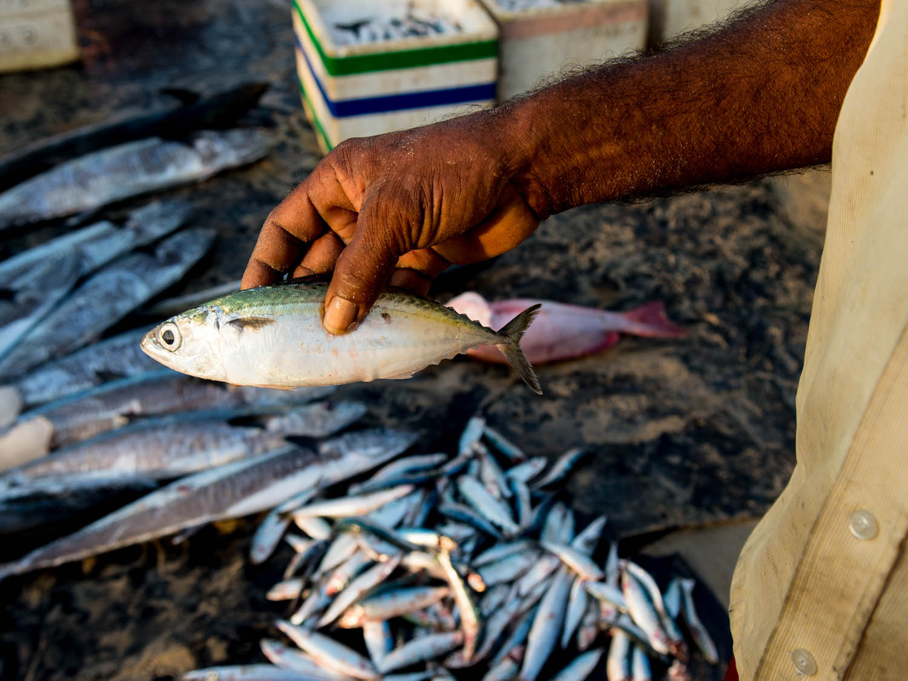
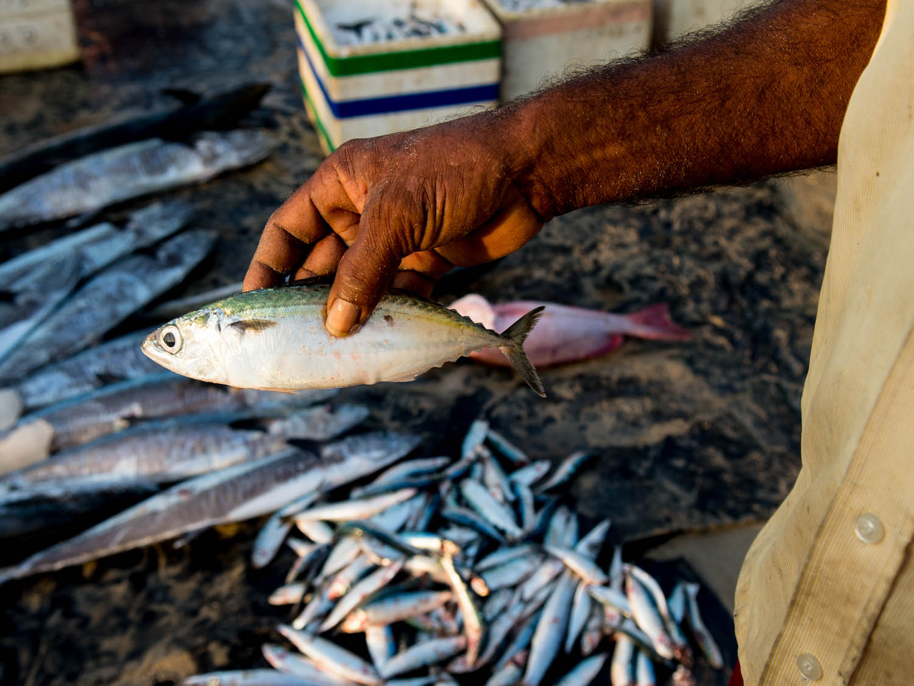

A taste of Sri Lankan cuisine
Sri Lankan food offers a vivid array of flavor combinations: sweet caramelized onion relishes, bitter melon, spicy scraped coconut, and the burn of curry tamed by mild rice, and palm sugar sweetened desserts. Thinner curries tend to be more heavily spiced than many Indian versions, and the cuisine is more inclusive of non-native ingredients, brought by international trade moving through the island. Foods that seemed to be known territory find exciting new applications in Sri Lanka.


 
